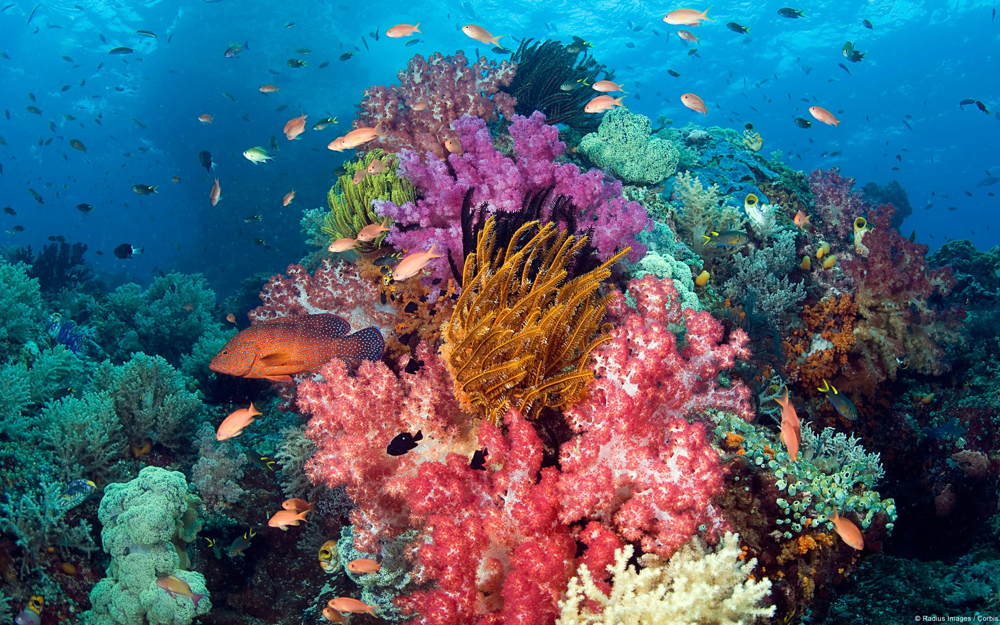
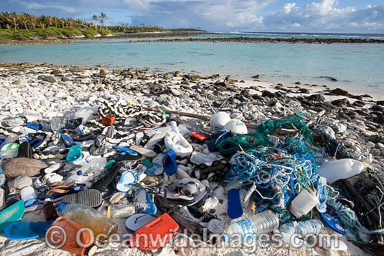
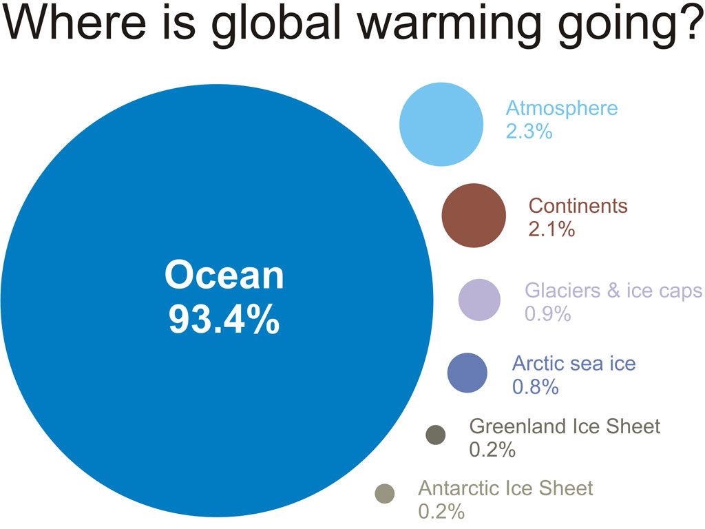

Tropical Oceans
Human Influence
Introduction
Coral Reefs
are fascinating and mysterious ecosystems. They have been around for over five hundred million years and are considered the marine equivalent of tropical rainforests. Covering only 2% of the ocean bottom, they are the home to 25% of all marine species.

Unfortunately
this underwater paradise is slowly being destroyed. Destructive actions such as the practice of uncontrolled, destructive fishing methods, oil spills, pollution (from domestic and industrial wastes, fertilizers, and pesticides), anchor damage, untreated or improperly treated sewage, and land runoffs are serious threats to the delicate reefs.

Another
factor contributing to the deterioration of the Coral Reef is Global Warming. Global Warming causes significant temperature increases in waters in which corals inhabit. This rise in sea temperature creates a very stressful living environment for the coral reef. Coral Reefs respond to such stresses by ejecting necessary symbiotic Zooxanthellae within them.The Zooxanthellae are single celled photosynthetic organisms that provide vital nourishment to the coral. This ejection leads to a loss of pigmentation in the coral reef, this is known as coral bleaching
How have humans affected tropical oceans?
Human
pollution as well as global warming have been destroying coral reefs and ocean life.

What can people do to preserve tropical oceans and coral reefs?
People
can reduce their produced waste, avoid contributing to global warming, and be more aware of the ocean life. Humans have been using the ocean as a endless source of food, a infinitely large place to fish in, but also to pollute and dump waste in. However, as time passed, the infinite source became finite, and now we are destroying the ocean and it’s life with pollutants and waste. Cutting down on waste as well as removing waste from the oceans is an important step in keeping the ocean stable.